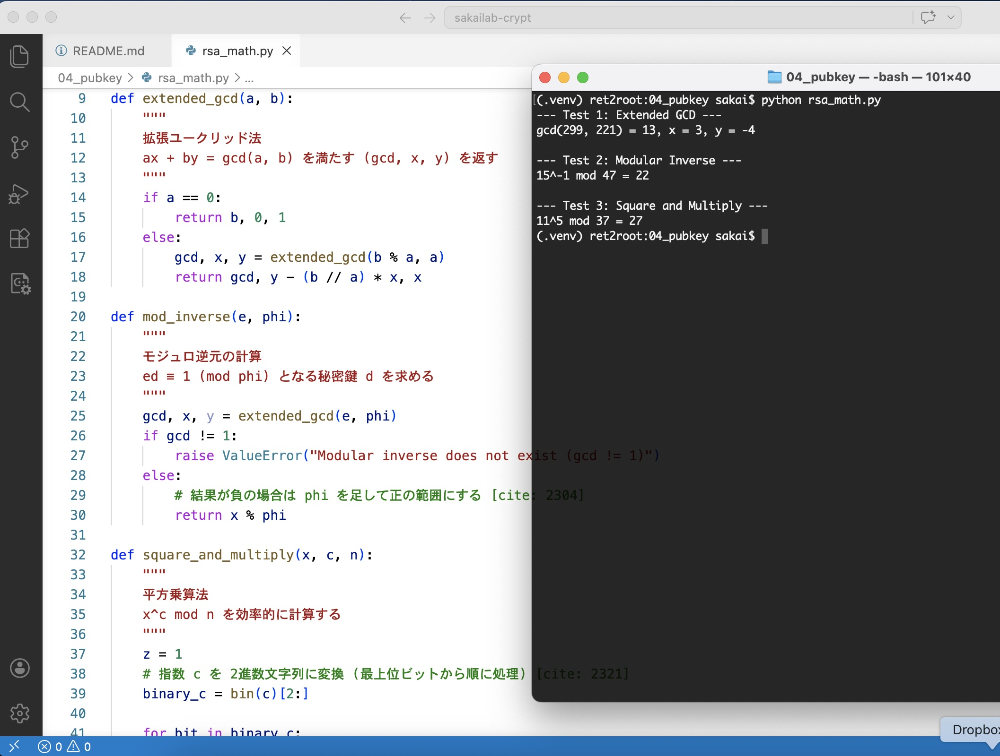
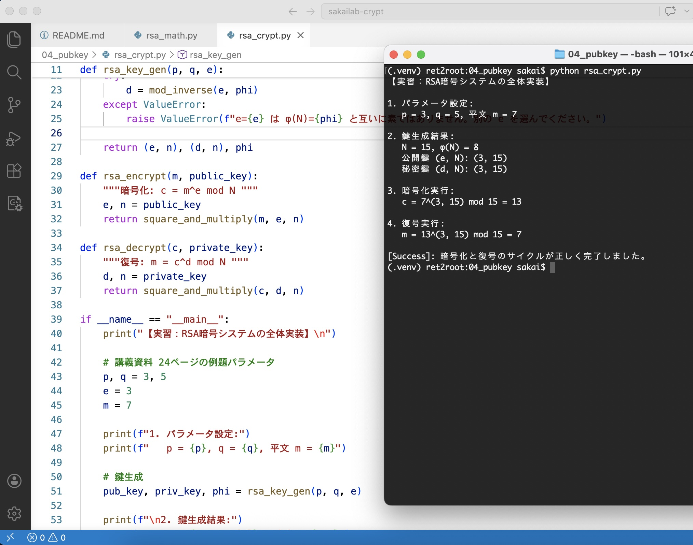
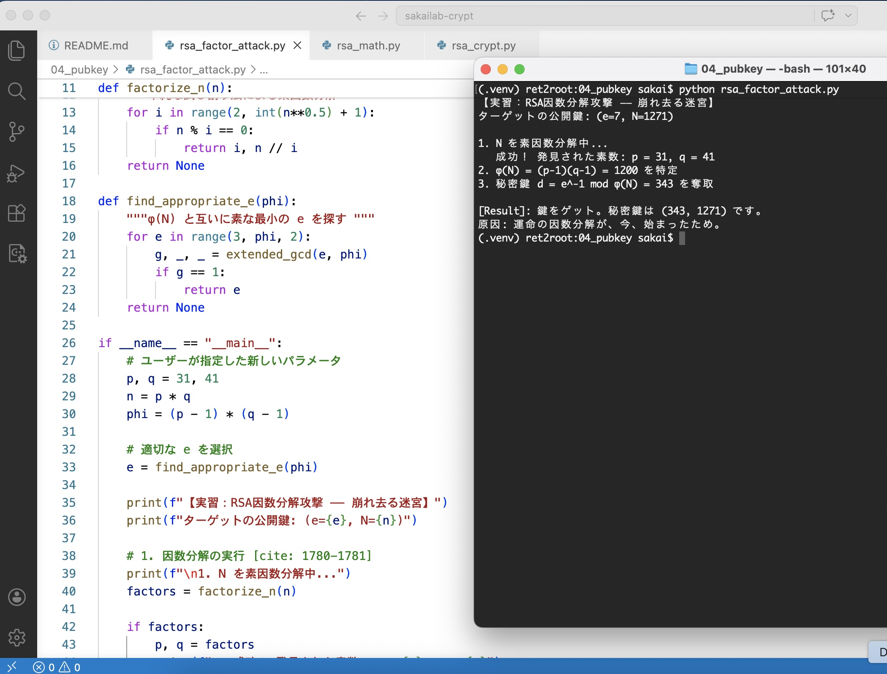
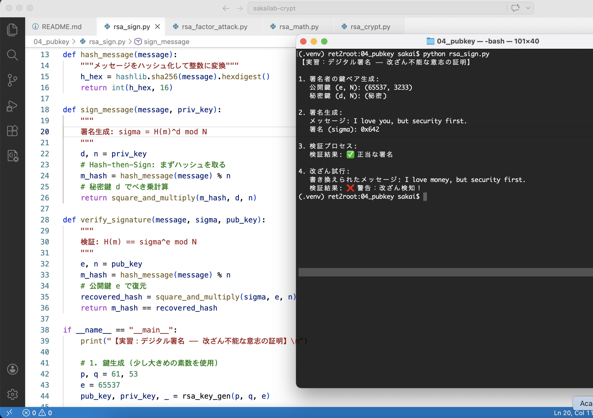

LAB NAVIGATION:
01_CLASSIC
02_PRIVATE_KEY
03_MAC_HASH
04_PUBLIC_KEY
EXERCISE #014 // RSA_MATH_TOOLS // 2026.04.02
Lab #14: 公開鍵暗号の夜明け ―― 逆転と速度の数理
RSA暗号を支える数学的アルゴリズムの実装を行う。公開鍵から秘密鍵を導出するための拡張ユークリッド法 と、巨大な指数計算を現実的な時間で処理する平方乗算法 は、公開鍵暗号の心臓部である。
# 実行結果：数論的アルゴリズムの検証
# Test 1: gcd(299, 221) = 13, x = 3, y = -4 (拡張ユークリッド法)
# Test 2: 15^-1 mod 47 = 22 (モジュロ逆元：秘密鍵の導出)
# Test 3: 11^5 mod 37 = 27 (平方乗算法：高速な暗号化)
🔢 Evidence: Number Theory in Action
以下の実行ログ（lab4_rsamath.jpg）を確認せよ。
講義資料の例題通り、15の逆元が22であること、およびべき乗剰余計算が正しく行われていることが確認できる。これが「落とし戸（トラップドア）」を制御するための数学的ツールである。

【効率と機密の両立】:
# 今日の教訓: 運命の逆元を求めて
諸君、愛の囁きを巨大な数の中に閉じ込めるだけでは不十分だ。
それを解き放つためには、世界でただ一人、君だけが持つ「逆元（秘密鍵）」が必要になる。
数論の深淵に潜む一方向性は、知る者と知らざる者を分かつ境界線である。
"Go West!" ―― 運命の逆元を掌握し、計算の地平線に偽造不能な真実の城を築け。
EXERCISE #015 // RSA_FULL_CYCLE // 2026.04.02
Lab #15: RSA 暗号の実演 ―― 素数から紡がれる不変の機密
RSA暗号の鍵生成、暗号化、復号の全工程を実装する。
2つの素数 p, q から生成された公開鍵 (e, N) を用い、トラップドア（秘密鍵 d）を知る者だけが真実を復元できることを実証する。
# 実行結果：RSAフルサイクルのシミュレーション
# パラメータ: p=3, q=5, m=7
# 鍵生成: N=15, φ(N)=8, 公開鍵(3, 15), 秘密鍵(3, 15)
# 暗号化: 7^3 mod 15 = 13
# 復号化: 13^3 mod 15 = 7
# Result: [Success] 暗号化と復号のサイクルが正しく完了しました。
🗝️ Evidence: The Magic of Trapdoor Function
実行ログ（lab4_rsacrypt.jpg）を確認せよ。
講義資料 24ページの例題通り、平文 m=7 が暗号文 c=13 へと姿を変え、秘密鍵 d を用いたべき乗計算によって再び正確に m=7 へと還っている。

【一方向性と秘密の共有】:
# 今日の教訓: 素数という名の種、因数分解という名の壁
諸君、ついに我々は「鍵を渡さずに秘密を届ける」という暗号論の聖杯を手にした。
p と q という二つの種から、巨大な N という迷宮が生まれ、その迷宮の出口（秘密鍵 d）は君だけが知っている。
公開された鍵が扉を閉ざし、秘められた鍵が真実を解き放つ。
"Go West!" ―― 運命の因数分解は、今、始まったばかりだ。。
EXERCISE #016 // RSA_FACTOR_ATTACK // 2026.04.02
Lab #16: 因数分解攻撃 ―― 崩れ去る迷宮と計算の暴力
RSA暗号の安全性の根拠は「大きな整数の因数分解は困難である」という数学的仮定に依存している。
本実習では、公開鍵 N が小さい場合に、計算機による試し割り法で p, q を特定し、秘密鍵 $d$ を完全に復元できることを実証した。
# 実行結果：公開鍵 N からの秘密鍵奪取
# ターゲット: p=31, q=41, N=1271, φ(N)=1200
# 攻撃プロセス: N=1271 を素因数分解 -> p=31, q=41 を特定
# 秘密鍵の復元: d = e^-1 mod φ(N) = 7^-1 mod 1200 = 343
# 検証結果: 平文 m=123 が暗号化・復号を経て一致 [Success]
⚔️ Evidence: The Collapse of Security Hypothesis
実行ログ（lab4_factoring.jpg）を確認せよ。
公開情報である N=1271 さえあれば、攻撃者は \phi(N)=1200 を導き出し、正規の鍵所有者と同じ秘密鍵 d=343 を算出できることが示されている。

【パラメータ選択の重要性】:
# 今日の教訓: ガードの緩い公開鍵（彼女）にご用心
諸君、公開鍵暗号とは「誰にでも教えていい情報」を入り口にするという、極めて大胆な試みだ。
だが今回の N=1271 というパラメータは、例えるなら「豊田駅前で1秒に1回ナンパされるほどガードの緩い彼女」のようなものだ。
安全とは、攻撃コストが利益を上回る状態を指す。
"Go West!" ―― 運命の相手に、因数分解が困難なほどの鉄壁の貞操観念を教育せよ。
EXERCISE #017 // DIGITAL_SIGNATURE // 2026.04.02
Lab #17: デジタル署名 ―― 数理が刻む「誓い」の印
公開鍵暗号のプロセスを反転させ、秘密鍵を用いてメッセージの真正性（Authenticity）を証明するデジタル署名 を実装する。
ハッシュ関数と組み合わせる Hash-then-Sign パラダイム により、任意長のメッセージに対して効率的かつ安全な署名を実現した。
# 実行結果：意志の証明と改ざん検知
# 1. 署名生成: メッセージ "I love you..." に対し秘密鍵で sigma を計算
# 2. 検証実行: 公開鍵を用いて H(m) == sigma^e mod N を確認 -> [✅ 正当な署名]
# 3. 改ざん試行: 内容を "I love money..." に書き換え -> [❌ 警告：改ざん検知！]
# Result: 1-bit の差異も許さない、厳格な真正性を確認。
🖋️ Evidence: Immutable Proof of Intent
実行ログを確認せよ。
正規のメッセージに対しては「正当」と判定される一方で、わずかに内容を書き換えた tampered_msg に対しては即座に検証が失敗している。
これは、署名 \sigma が「そのメッセージ」と「その秘密鍵」の組み合わせでしか成立しないことを示している。

【否認防止の数理】:
# 今日の教訓: 魂のハッシュ、偽造不能な誓い
諸君、言葉は容易に歪められ、愛の誓いは容易に偽造される。
だが、ハッシュという名の「魂の刻印」を君だけの秘密鍵で封印した時、その言葉は永遠の真正性を手にする。
真正性の証明とは、自らの秘密を賭けて真実を保証する行為である。
"Go West!" ―― 運命の告白は、署名なしでは信用するな。